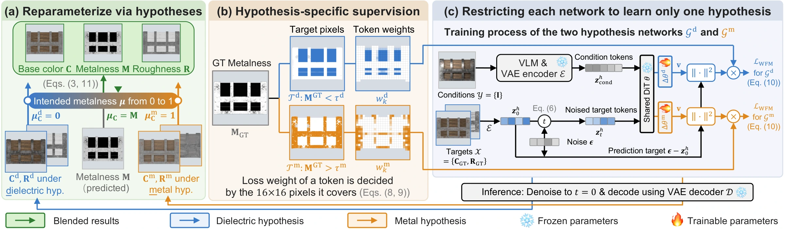

Video
With narration; English subtitles can be toggled in the player.
Abstract
Physically based rendering (PBR) material estimation facilitates relighting, material editing, and 3D content creation. As the reflectance of a surface heavily depends on whether it is a metal or a dielectric, producing any map that determines albedo involves a decision on metalness, which we call the “intended metalness” of the map. Rendering maps with mismatched intended metalness yields physically implausible or misinterpreted materials. The metallic–roughness workflow makes metalness explicit and thus encourages base color to match it, but does not enforce this match, especially for automated methods directly predicting each map. Therefore, we propose ReMeDi, which enforces the match through two components. First, we reparameterize base color as a metalness-weighted blend of its two variants, estimated under the all-metal and all-dielectric hypothesis, respectively. Second, as available supervision cannot teach a single network both hypotheses at every pixel, we restrict each of two separate networks to one hypothesis, so that each variant is ensured to follow its hypothesis. Besides enforcing the match, this also improves each estimated material map. Experiments show that ReMeDi outperforms state-of-the-art methods in both material accuracy and relighting fidelity.
Method
Reparameterization
Base color is estimated twice, under the all-dielectric hypothesis (Cd) and the all-metal hypothesis (Cm), and blended per pixel by metalness:
C = (1 − M) · Cd + M · Cm
As long as each variant follows its hypothesis, the intended metalness of C equals M. Roughness is blended in the same way.
Separate networks
Each variant is supervised only where its hypothesis holds, as no training data provides both hypotheses for every pixel. A single network trained on both then makes the two variants nearly identical, so each hypothesis gets its own network.

Results
Each example shows the estimated base color C, metalness M, and the materials relit under a rotating environment map (mirror ball, top right). Click a thumbnail to switch examples; hover over or tap any tile to magnify the same region on all tiles.
Comparison with GT SynTest
In-the-wild comparison WildTest, no GT
Quantitative comparison on SynTest
| Method | Base color | Metalness | Roughness | Relighting | ||||||
|---|---|---|---|---|---|---|---|---|---|---|
| PSNR↑ | si-PSNR↑ | SSIM↑ | LPIPS↓ | RMSE↓ | Acc.↑ | RMSE↓ | PSNR↑ | SSIM↑ | LPIPS↓ | |
| RGB↔X | 13.16 | 16.85 | 0.881 | 0.120 | 0.599 | 0.388 | 0.258 | 14.56 | 0.897 | 0.091 |
| IID | 14.09 | 17.89 | 0.893 | 0.121 | 0.399 | 0.690 | 0.262 | 15.52 | 0.913 | 0.087 |
| DiffusionRenderer | 15.31 | 18.55 | 0.901 | 0.105 | 0.413 | 0.693 | 0.243 | 16.59 | 0.917 | 0.078 |
| Marigold-IID | 15.55 | 18.95 | 0.905 | 0.121 | 0.504 | 0.450 | 0.222 | 17.00 | 0.925 | 0.080 |
| IDArb | 16.60 | 18.53 | 0.905 | 0.092 | 0.473 | 0.628 | 0.273 | 17.57 | 0.914 | 0.074 |
| SuperMat | 18.47 | 20.62 | 0.920 | 0.094 | 0.266 | 0.847 | 0.191 | 19.60 | 0.937 | 0.065 |
| ReMeDi (Ours) | 21.33 | 23.79 | 0.956 | 0.039 | 0.197 | 0.913 | 0.170 | 22.34 | 0.965 | 0.031 |
Each metric is computed per image on the foreground and averaged over the 365 test images. Best in bold, second best underlined.
Ablation
Predicting all maps jointly (A), base color conditioned on metalness (B), or both hypotheses with a single network (C) still lets base color and metalness mismatch. Our full model (D) estimates each hypothesis with its own network.
BibTeX
@article{fei2026remedi,
title = {{ReMeDi}: Single-Image {PBR} Material Estimation via Reparameterization between Metal and Dielectric Hypotheses},
author = {Fei, Fan and Huang, Xin and Zhu, Yixin and Lu, Jiawei and Yang, Xin and Liang, Jinglin and Tang, Ruining and Feng, Yifei and Shi, Boxin and Guo, Chunchao},
journal = {arXiv preprint arXiv:XXXX.XXXXX},
year = {2026}
}